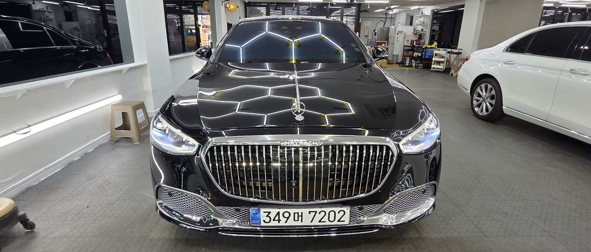
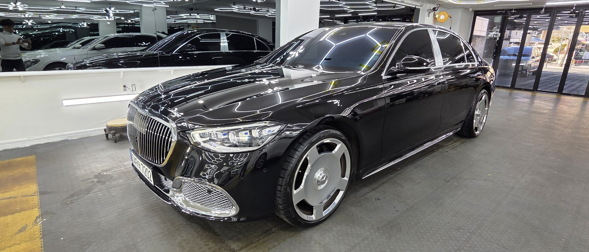
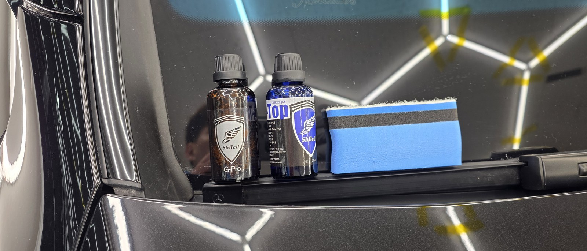
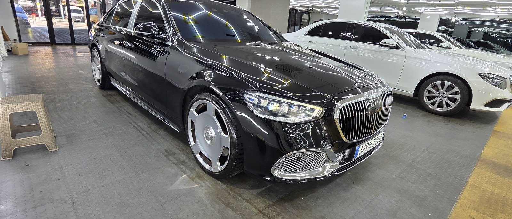
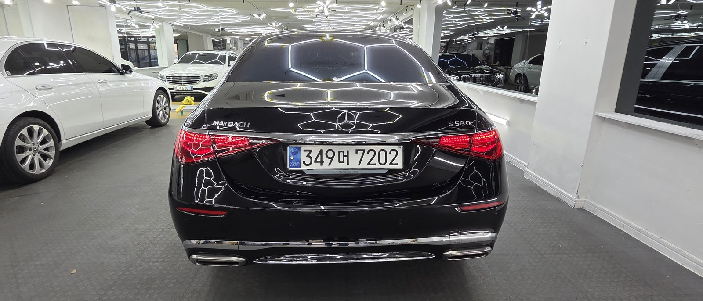
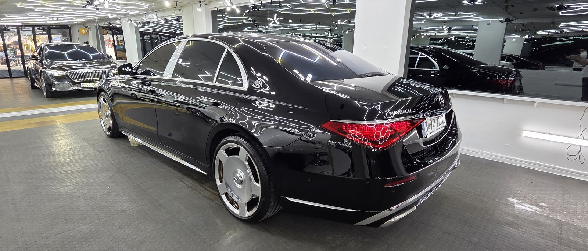

마이바흐 S580 검정입니다. 아직 출고 전, 새 차입니다.
이 차는 출고 전에 G-PRO·G-TOP 듀얼 유리막코팅으로 진행했습니다.

마이바흐 같은 차도 왜 출고 전에 코팅하나
도장면이 가장 깨끗할 때 올리는 코팅이 가장 오래갑니다.
출고 후에는 운행과 세차로 미세한 잔기스와 오염이 쌓이기 시작합니다. 그게 쌓이기 전, 신차 상태 그대로일 때 코팅막을 입혀두는 겁니다. 차 값이 올라갈수록, 처음 컨디션을 지키는 일이 더 중요해집니다.

검정 신차에 왜 싱글이 아니라 듀얼인가
듀얼코팅은 G-PRO와 G-TOP을 겹쳐 올리는 방식입니다.
G-PRO는 저희 제품 중 경도가 가장 높은 하드코팅입니다. 스크래치 내성을 담당합니다. G-TOP은 발수·방오 성능이 강합니다. 빗물과 오염을 밀어내는 쪽입니다.
검정은 잔기스와 물자국이 가장 잘 보이는 색입니다. 그래서 단단함과 발수·방오를 동시에 가져가는 듀얼로 잡았습니다. 코팅제는 대표가 화학공학 전공으로 직접 개발·제조한 제품입니다.

직접 개발·제조한 G-PRO·G-TOP. 제품을 만드는 사람이 직접 올립니다
기술자의 팁
신차라고 바로 코팅을 올리지 않습니다. 운송·보관 중 묻은 미세 오염을 디테일링 세차와 탈지로 걷어낸 뒤에 올립니다. 깨끗한 바탕 위에 올려야 코팅이 제대로 밀착합니다.
코팅막이 고르게 올라갔는지는 반사로 봅니다
검정 패널 위로 헥사 조명이 한 칸 한 칸 맺힙니다.
왜곡 없이 떨어지는 반사가, 코팅막이 고르게 올라갔다는 증거입니다. 검정 특유의 깊은 발색 위에, 단단한 보호막을 한 겹 입힌 상태입니다.



자주 묻는 질문
Q. 마이바흐 같은 신차도 출고 전에 코팅하나요?
A. 도장면이 가장 깨끗할 때 올리는 코팅이 가장 오래갑니다. 운행·세차로 잔기스와 오염이 쌓이기 전, 신차 상태 그대로일 때 코팅막을 입혀두면 처음 컨디션을 더 오래 지킵니다.
Q. 검정 신차에 왜 싱글이 아니라 듀얼코팅인가요?
A. G-PRO는 경도가 높아 스크래치 내성을, G-TOP은 발수·방오를 담당합니다. 검정은 잔기스와 물자국이 가장 잘 보이는 색이라, 둘을 겹쳐 단단함과 발수·방오를 동시에 가져가는 듀얼이 잘 맞습니다.
Q. 신차코팅도 전처리를 하나요?
A. 합니다. 신차라도 운송·보관 중 미세 오염이 묻습니다. 디테일링 세차와 탈지로 표면을 정리한 뒤 코팅을 올려야 제대로 밀착합니다.
Q. 코팅제는 어디서 만든 제품인가요?
A. 대표가 화학공학 전공으로 직접 개발·제조한 G-PRO·G-TOP을 씁니다. 제품을 만드는 사람이 직접 시공하기 때문에 차종과 색에 맞는 조합을 직접 판단해 올립니다.
Q. 쉴드광택 위치와 예약은 어떻게 하나요?
A. 부산 남구 유엔로220 1F 쉴드광택입니다. 예약·상담은 010-3384-1850, 대표 최한중이 직접 상담하고 책임 시공합니다.
새 차일수록 시작점이 다릅니다. 가장 깨끗할 때 입혀두십시오.
제품을 직접 만드는 사람이 직접 시공합니다.
부산에서 신차코팅을 고민 중이시면 편하게 연락 주십시오.
어떤 차를 타냐보다 어떻게 타냐가 중요합니다~!
📞 010-3384-1850 견적 문의쉴드광택 · 부산 남구 유엔로220 1F · 대표 최한중